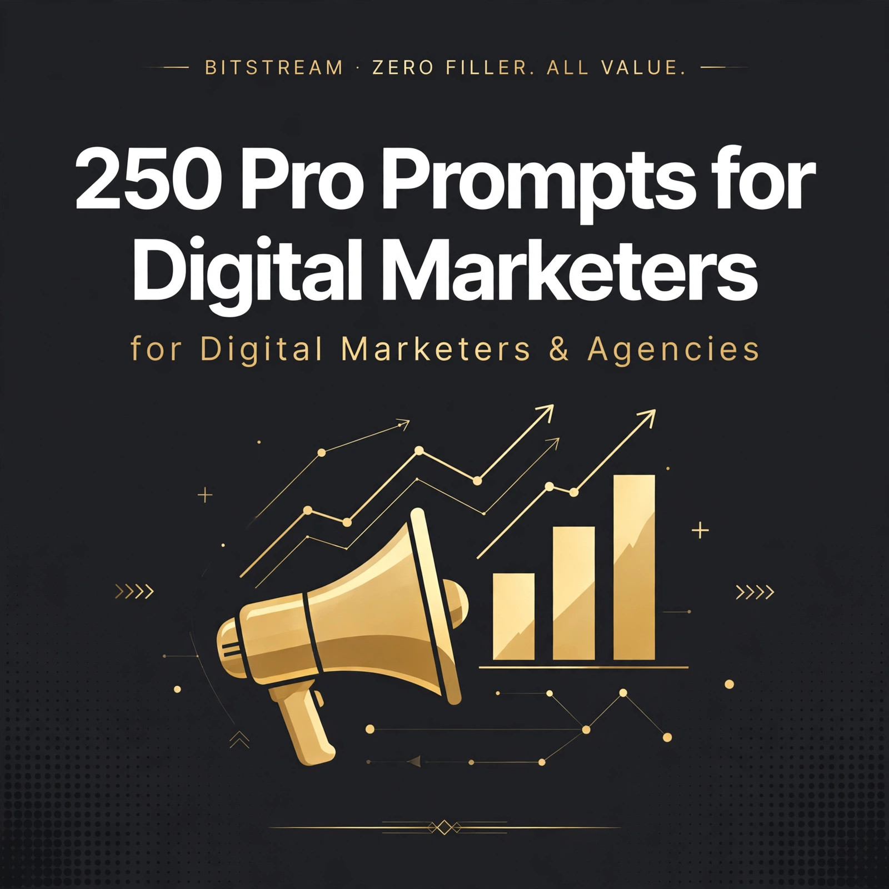

BITSTREAM · ZERO FILLER. ALL VALUE.
250 Pro Prompts
for Digital Marketers
250 copy-paste prompts for marketers & agencies.
Open a free AI tool, paste, fill in the blanks, ship the work.
PRO PACK · $14.99
How to use this pack (60 seconds)
- Open a free AI tool — ChatGPT (chatgpt.com), Claude (claude.ai), Gemini (gemini.google.com), or Meta AI. No paid plan needed.
- Copy any prompt and replace the [BRACKETED] parts with your client, product, and numbers.
- Feed it real inputs. Paste in your analytics, your reviews, your competitor's ads — specifics in, quality out. "Write ad copy" gets generic. "Write 5 Meta ad variants for [product] aimed at [audience], angle: [price objection]" gets work you can ship.
- Treat the first answer as a draft. Reply with "punchier," "shorter for mobile," or "add urgency" until it's client-ready.
- Verify before you publish. Check stats, claims, and compliance (ad policies, CAN-SPAM, FTC disclosure) yourself — AI drafts, you sign off.
Rule 1 — Brief like a strategist. The bracketed details ARE the strategy. A tight brief (audience, offer, objection, platform) beats a clever prompt every time.
Rule 2 — Steal the structure, not the words. Use these prompts to generate starting points, then rewrite in your client's voice. Your taste is the product.
Rule 3 — One deliverable per prompt. Don't ask for "a whole campaign" in one shot. Ad angles first, then copy, then creative brief — in that order.
1 · Ad Copy & Creative Hooks
Paid ad copy that actually gets clicked — headlines, angles, CTAs, and creative briefs for Meta, Google, and TikTok ads.
PROMPT 001
Paid Video Ad Hook Generator
Act as a performance media buyer. Write 10 thumb-stopping video hooks for a Facebook ad promoting [product name] to [target audience], focusing on the pain point of [specific frustration]. Use a mix of curiosity, negative constraint, and direct call-out formats.
PROMPT 002
High-Converting Ad Headlines
Generate 15 direct-response Facebook and Instagram ad headlines for [offer/product], targeting [audience persona]. Incorporate power words like '[desired benefit]' while keeping each headline under 45 characters to avoid truncation.
PROMPT 003
PAS Framework Primary Text
Write a long-form Facebook ad primary text using the Problem-Agitate-Solve framework. The product is [product name], the audience is [target audience], and the core transformation is [main benefit]. End with a clear sense of urgency around [offer/deadline].
PROMPT 004
AIDA Retargeting Copy
Create a short-form retargeting ad using the AIDA framework for website visitors who abandoned their cart for [product name]. Address the objection of [common objection] and offer a limited-time incentive of [discount/bonus].
PROMPT 005
UGC Video Brief Blueprint
Write a detailed creative brief for a creator filming a TikTok/Reels UGC ad for [product]. Outline a 3-part structure: a 3-second hook targeting [audience pain point], a demo of [key feature], and a CTA emphasizing [offer details].
PROMPT 006
Ad Fatigue Creative Refresh
Analyze the creative fatigue angle for [product name] currently running on [platform]. Provide 5 fresh alternative concepts by shifting the primary angle from [current angle] to [new angle, e.g., social proof, founder story, or unboxing].
PROMPT 007
B2B LinkedIn Sponsored Content
Write 3 variations of LinkedIn sponsored content text for [B2B SaaS product], targeting [job title/industry]. Focus on the ROI metric of [specific metric, e.g., saving 10 hours a week] and include a professional CTA for a [lead magnet/demo].
PROMPT 008
Psychological Offer Framing
Reframe the pricing and value proposition for [product/service] to make the offer irresistible to [target audience]. Provide 3 distinct framing options: Decoy Pricing, Value Stacking, and Risk Reversal with a [guarantee type].
PROMPT 009
High-Impact CTA Variations
Write 12 distinct Call-to-Action (CTA) button copy options and supporting text for a landing page promoting [offer]. Categorize them into urgency-driven, curiosity-driven, and risk-free categories for a [platform, e.g., Meta lead gen] campaign.
PROMPT 010
Founder Story Ad Script
Write a 60-second video script for a founder-led ad introducing [brand name]. Detail why you built the product to solve [specific problem] for [target audience], highlighting your unique mechanism: [unique feature/process].
PROMPT 011
Before-And-After Ad Angle
Create a carousel ad copy sequence for [product] using a Before-And-After framework. Card 1 introduces the before state of [pain point], cards 2-3 show the journey using [product feature], and card 4 reveals the after state of [desired outcome].
PROMPT 012
Dynamic Creative Headline Variations
Generate 5 variations of short, punchy ad headlines for a Dynamic Creative setup on Meta, promoting [product] to [audience]. Each headline must test a different psychological trigger: Fear of Missing Out, Social Proof, Authority, Novelty, and Cost Savings.
PROMPT 013
TikTok Native Aesthetic Brief
Write a creative brief for a graphic designer to create 3 static image ads for TikTok promoting [product] using a native, lo-fi aesthetic. Include specific instructions on typography, background textures, and placement of the core claim: [main benefit].
PROMPT 014
Contrarian Angle Ad Copy
Write a controversial or contrarian-angle ad text for [industry/product] that challenges the conventional wisdom of [common industry belief]. The ad must appeal to [target audience] and pivot smoothly into introducing [product solution].
PROMPT 015
Unboxing & First Impression Brief
Draft a UGC video script outline focusing entirely on the unboxing experience and first impressions of [physical product]. Specify camera angles, natural lighting cues, and the exact phrasing for the reviewer's reaction to [packaging/texture/scent].
PROMPT 016
Seasonal Promo Ad Copy Pack
Write a 3-part email or ad sequence for a seasonal sale promoting [product/service] for [holiday/season event]. Include the teaser phase, launch day announcement with [discount amount], and a final hours scarcity reminder.
PROMPT 017
Problem-First Carousel Script
Write the slide-by-slide copy for a 5-card Instagram carousel ad. Card 1 calls out [specific user mistake], cards 2-4 explain why it fails and introduce [product method], and card 5 features a strong CTA to grab [offer].
PROMPT 018
Comparison Ad Angle (Vs Competitor)
Write a tasteful comparison ad copy piece highlighting why [brand] is a superior choice to [competitor category or alternative] for [target audience]. Focus strictly on the differentiator of [unique product feature] without naming the competitor directly.
PROMPT 019
High-Intent Retargeting Sequence
Create a 3-ad retargeting sequence for people who visited the checkout page for [product] but didn't buy. Ad 1 addresses [top objection], Ad 2 features a customer testimonial about [result], and Ad 3 provides a time-sensitive incentive of [bonus/discount].
PROMPT 020
Stat-Led Hook & Body Copy
Write a Facebook ad primary text that opens with a striking industry statistic: [insert statistic]. Connect this data point directly to the struggles of [target audience] and introduce [product] as the proven solution to achieve [goal].
PROMPT 021
App Install Value Proposition
Write 5 ad copy variations for an app install campaign for [app name]. Each variation must highlight a different core benefit: [benefit 1], [benefit 2], and [benefit 3], optimized for the [iOS/Android] user journey.
PROMPT 022
Interactive Poll Ad Concepts
Develop 3 interactive poll-style ad concepts for Instagram Stories promoting [product/service]. Write the poll question, the two binary voting options, and the automated DM response copy triggered when users vote.
PROMPT 023
Local Service Lead Gen Copy
Write a hyper-local Facebook ad campaign text for a [type of local business, e.g., HVAC company] serving [city/region]. Address the immediate local need of [seasonal problem] and offer a risk-free [inspection/consultation].
PROMPT 024
Testimonial Integration Ad Text
Format a customer review into a high-converting ad primary text for [product]. Weave the direct quote from [customer name] about [specific transformation] into a compelling narrative that appeals directly to [target audience].
PROMPT 025
Micro-Influencer Spark Ad Brief
Write a messaging template to pitch micro-influencers in the [niche] space for a Spark Ad partnership promoting [product]. Outline the content requirements: a 30-second honest review showcasing [key feature] and permission to run paid amplification.
2 · Audience & Market Research
Know exactly who you're selling to — ICPs, personas, voice-of-customer mining, and competitor intel.
PROMPT 026
Build a Deep Buyer Persona
Act as an elite consumer psychologist. Create a comprehensive buyer persona for [your product/service] targeting [target audience] who struggle with [core pain point]. Include their daily frustrations, hidden emotional triggers, media consumption habits, and top three buying objections so I can tailor my [marketing channel] campaigns.
PROMPT 027
Extract Voice-of-Customer from Reviews
Analyze these competitor reviews: [paste 10-15 reviews here]. Extract the exact phrasing, emotional words, slang, and specific complaints customers use regarding [product category]. Group them into recurring themes to help me rewrite my [landing page headline] and [ad creative hooks].
PROMPT 028
Uncover Competitor Ad Angles
Act as a media buyer. Based on this competitor's active ad strategy in [industry/niche], identify their primary hooks, visual style, landing page funnel structure, and weakest angles I can exploit. Output a tactical brief for my next [video ad] production.
PROMPT 029
Define Unique Market Positioning
Compare [your brand] against our top three competitors: [competitor 1], [competitor 2], [competitor 3]. Based on our unique advantage of [key feature/benefit], write a disruptive positioning statement and a 3-paragraph brand manifesto tailored for [target platform].
PROMPT 030
Perform a Comprehensive Offer Audit
Review this current offer: [paste offer details, pricing, and bonuses]. Identify weak value propositions, missing risk reversals, and friction points that cause drop-off. Rewrite the offer structure to maximize perceived value for [target demographic].
PROMPT 031
Discover Hidden Market Gaps
Scan the current market landscape for [industry/niche] and identify three underserved sub-segments currently ignored by major players. For each gap, outline a profitable productized service or offer package we can launch on a [monthly/quarterly] basis.
PROMPT 032
Map the Customer Journey Stages
Map out a 4-stage customer journey (Awareness, Consideration, Decision, Retention) for [ideal customer profile] buying [high-ticket offer]. Detail the exact emotional state, friction point, and content piece needed at each stage to drive conversions on [website/funnel].
PROMPT 033
Mine Reddit Comments for Pain Points
Analyze these Reddit discussions: [paste forum thread excerpts or topic name]. Extract the unvarnished complaints, desired outcomes, and failed solutions discussed by [target audience]. Turn these insights into three distinct angle briefs for our upcoming [Facebook ad campaign].
PROMPT 034
Draft a Psychographic Survey Questionnaire
Write a 7-question multiple-choice and open-ended survey designed to uncover the deep psychological drivers of our email subscribers who haven't bought [product name] yet. Ensure the questions capture their [budget limits] and [primary hesitation].
PROMPT 035
Analyze Social Media Comment Sections
Review these comments from a viral industry post: [paste comment excerpts]. Categorize the sentiment into praise, skepticism, and unanswered questions. Write a bulleted list of content ideas that directly answer these doubts for our [Instagram/TikTok] strategy.
PROMPT 036
Reverse-Engineer Competitor Funnels
Act as a conversion rate optimization expert. Based on [competitor URL or funnel description], outline their entire front-end funnel flow from lead magnet to tripwire to core offer. Highlight the exact psychological triggers used on their [checkout page].
PROMPT 037
Build an Empathy Map Matrix
Create a detailed 4-quadrant Empathy Map (Says, Thinks, Does, Feels) for [buyer persona] as they consider purchasing [product category] under current economic conditions in [geographic region]. Use this to inform our [brand messaging guide].
PROMPT 038
Formulate Core Messaging Pillars
Based on our product [product name] and audience [target audience], develop four distinct messaging pillars that blend logical benefits with emotional resonance. Provide two headline examples for each pillar suitable for [Google Search ads].
PROMPT 039
Audit Competitor Value Propositions
Analyze the value propositions of these three market leaders: [competitor A], [competitor B], [competitor C]. Show me where they overlap, where they fail to deliver, and write a superior, differentiated value proposition for [our brand].
PROMPT 040
Identify Buying Objections & Rebuttals
List the top five unspoken objections [target audience] has when looking at [product/service]. Write punchy, persuasive rebuttal copy for each objection to be used in our upcoming [sales page FAQ section] and [retargeting ads].
PROMPT 041
Segment Audience by Sophistication Level
Using Eugene Schwartz's levels of market sophistication, classify our audience for [product name] into Unaware, Problem-Aware, Solution-Aware, Product-Aware, and Most Aware. Write a custom hook for [email marketing] targeting the Problem-Aware segment.
PROMPT 042
Analyze App Store or Trustpilot Reviews
Review these customer feedback entries from Trustpilot/App Store: [paste reviews]. Separate the 1-star complaints from the 5-star praises. Turn the most common 1-star frustration into a guarantee statement for our [landing page].
PROMPT 043
Develop a Brand Archetype Strategy
Determine the optimal Jungian brand archetype for [brand name] selling [product type] to [target audience]. Describe how this archetype should dictate our visual tone, copywriting voice, and community interaction style on [social media platforms].
PROMPT 044
Uncover B2B Decision-Maker Priorities
Act as a B2B enterprise strategist. Outline the differing priorities, risk tolerances, and ROI metrics that the CFO, CMO, and IT Director care about when evaluating [SaaS product]. Write a tailored cold email angle for the [CFO persona].
PROMPT 045
Build a Feature-to-Benefit Translation Grid
Take these five raw product features of [product name]: [list features]. Convert each one into a customer-centric emotional benefit and a functional benefit, then write a 1-sentence micro-copy snippet for [banner ads].
PROMPT 046
Audit Amazon Review Pain Points
Analyze these Amazon product reviews for a similar product: [paste reviews]. Identify the specific design flaws or missing features customers complain about. Formulate a product improvement brief and a marketing angle highlighting how [our brand] fixes these issues.
PROMPT 047
Create a Niche Market Sizing Blueprint
Act as a market research analyst. Estimate the Total Addressable Market (TAM), Serviceable Addressable Market (SAM), and Serviceable Obtainable Market (SOM) for launching a [specific niche product] in the [geographic market] market. Provide realistic assumptions.
PROMPT 048
Design a Customer Interview Script
Write a 10-question qualitative interview script for us to use with our best churned customers. The questions must uncover the exact moment they realized [product name] wasn't working for them, their alternative solution, and their [budget thresholds].
PROMPT 049
Map Competitor Traffic and Channel Mix
Analyze the typical traffic acquisition mix (SEO, paid social, partnerships, direct) for top players in the [industry] space. Recommend the single most profitable acquisition channel for a bootstrapped startup with a [monthly budget] budget.
PROMPT 050
Formulate a Category Creation Strategy
Act as a branding visionary. Help us create a new sub-category for our innovative product [product name]. Write a manifesto naming the enemy, defining the paradigm shift, and outlining the core philosophy for our upcoming [launch webinar].
3 · SEO & Content Briefs
Rank and get read — keyword plans, writer briefs, and content that search engines and humans both like.
PROMPT 051
Build a comprehensive seed keyword cluster
Act as an advanced SEO strategist. Generate a clustered list of 30 semantic keywords based on our core seed keyword [seed keyword], targeting our primary audience [target audience] in the [industry/niche] sector, categorized by search intent.
PROMPT 052
Map user intent to target keywords
Analyze the following list of keywords: [keyword list]. For each keyword, define whether the primary search intent is informational, navigational, commercial, or transactional, and recommend the ideal content format to rank.
PROMPT 053
Generate a detailed writer content brief
Create a comprehensive SEO content brief for a freelance writer targeting the keyword [primary keyword]. Include target word count [word count], primary and secondary keywords to include, recommended H2 and H3 structures, and the required angle for our brand [brand name].
PROMPT 054
Draft high-converting blog post outline
Develop a detailed, high-retention blog post outline for the topic [topic] optimized for the keyword [primary keyword]. Incorporate engaging H2 and H3 headings, bullet points for readability, and strategic placement for our product [product name].
PROMPT 055
Run an on-page SEO optimization audit
Review the following draft copy for a page targeting the keyword [primary keyword]: [paste draft copy]. Provide an actionable on-page SEO checklist detailing missing keyword placements, recommended word count adjustments, and readability enhancements.
PROMPT 056
Write click-worthy meta titles and descriptions
Write 5 variations of CTR-optimized meta titles (under 60 characters) and meta descriptions (under 155 characters) for our landing page about [topic] targeting the keyword [primary keyword]. Ensure each variation includes a strong value proposition and call to action.
PROMPT 057
Design a strategic internal linking plan
Act as an information architecture expert. Based on our new article about [new article topic], recommend 5 specific internal linking opportunities from existing pages on our site [website URL], detailing the exact anchor text and contextual placement for each link.
PROMPT 058
Plan a data-driven content refresh strategy
Analyze our underperforming blog post about [topic] with the URL [URL]. Provide an actionable step-by-step refresh plan to recover lost rankings, including outdated statistics to update, new sections to add, and competitors to outrank.
PROMPT 059
Uncover hidden long-tail question keywords
Generate a list of 20 high-intent long-tail question keywords that people actively search on Google regarding [topic] in the [industry] market. Group these questions by funnel stage (awareness, consideration, decision).
PROMPT 060
Extract PAA questions for content expansion
Based on the core topic [core topic], generate 15 'People Also Ask' style questions and provide concise, 40-word direct answers optimized for winning Google featured snippets.
PROMPT 061
Conduct a competitor content gap analysis
Compare our coverage of [core topic] against our top competitor [competitor URL]. Identify 5 content gaps, missing subtopics, or unanswered user pain points that we can capitalize on to steal their organic traffic.
PROMPT 062
Build a pillar page and cluster architecture
Design a complete topic cluster content strategy for our pillar topic [pillar topic]. Outline 1 main pillar page and 6 supporting cluster article topics with their respective primary keywords and internal linking pathways.
PROMPT 063
Optimize images for alt text and SEO
Review this list of image descriptions for our article about [topic]: [image descriptions]. Write SEO-friendly, descriptive alt text for each image that incorporates relevant variations of the keyword [primary keyword] naturally.
PROMPT 064
Formulate a category page SEO strategy
Create an SEO content strategy and introductory copy block for our e-commerce category page selling [product category]. Include semantic keywords, user intent guidelines, and a layout recommendation to improve search visibility.
PROMPT 065
Audit and fix keyword cannibalization issues
We have two pages ranking for the keyword [target keyword]: [URL 1] and [URL 2]. Analyze these pages and recommend a definitive resolution plan (e.g., 301 redirect, content consolidation, or distinct re-targeting) to fix keyword cannibalization.
PROMPT 066
Write schema markup implementation guide
Generate valid JSON-LD schema markup for an [article / product / FAQ] page on our site [website URL] covering the topic [topic]. Provide clear instructions on where to paste the code in our CMS [CMS name].
PROMPT 067
Build a B2B SaaS programmatic SEO plan
Develop a programmatic SEO data variable sheet framework for our software product [product name] targeting the integration category [integration type]. Create 5 sample page title formulas and localized content templates.
PROMPT 068
Create a localized SEO keyword expansion plan
Develop a localized SEO keyword expansion plan for our business [business name] offering [service] across the following target regions: [list regions]. Include location-specific modifier keywords and localized landing page ideas.
PROMPT 069
Draft a comprehensive glossary of terms
Create a structured outline and draft definitions for an SEO glossary page containing 10 complex industry terms related to [niche/topic]. Optimize each definition to capture featured snippets for '[term] definition' queries.
PROMPT 070
Optimize URLs for maximum SEO impact
Review the following proposed URL slugs for our new website structure: [list URLs]. Rewrite them to follow SEO best practices (short, keyword-rich, hyphenated, and free of unnecessary stop words).
PROMPT 071
Build a backlink outreach angle generator
We want to build backlinks to our ultimate guide on [topic]. Generate 4 distinct, highly personalized email outreach angles we can send to industry bloggers and journalists in the [industry] niche.
PROMPT 072
Perform an E-E-A-T trust signals review
Review our landing page for [topic] from an Google E-E-A-T perspective. Provide a specific checklist of trust signals, author bio enhancements, citation strategies, and credibility markers we need to add to satisfy quality raters.
PROMPT 073
Create a quarterly SEO content calendar
Build a 3-month SEO content calendar for our blog in the [industry] niche focusing on the overarching theme of [theme]. Include 12 article titles, primary keywords, target audience segment, and intended publishing month.
PROMPT 074
Evaluate article readability and engagement
Analyze the following draft article section: [paste text]. Rewrite it to improve scannability for web readers, reducing dense paragraphs, adding bullet points, and incorporating active voice while retaining key SEO terms.
PROMPT 075
Generate FAQ section for product pages
Write a high-converting FAQ section containing 6 common customer objections and questions for our product page selling [product name]. Optimize the answers with relevant semantic keywords to capture long-tail search traffic.
4 · Email & Lifecycle Marketing
Sequences that sell while you sleep — welcome flows, carts, re-engagement, and newsletters people open.
PROMPT 076
High-Converting 4-Email Welcome Sequence
Act as an expert lifecycle marketer. Write a 4-part welcome email sequence for [brand name] that introduces our core philosophy for [product/service], shares a founder story, highlights customer reviews, and delivers a first-time buyer discount code of [discount offer]. Tone should be [brand voice] and target [target audience].
PROMPT 077
Loss-Aversion Abandoned Cart Flow
Write a 3-part abandoned cart recovery sequence for [e-commerce store] selling [product category]. Email 1 is a gentle reminder within 1 hour, Email 2 applies social proof within 24 hours, and Email 3 introduces a strict deadline with a small incentive of [incentive offer] for [target audience].
PROMPT 078
Win-Back Re-Engagement Campaign
Draft a 3-part re-engagement email sequence targeting subscribers who haven't opened an email from [company name] in [number] days. Focus on a breakup email angle, a survey asking why they left, and a final 'last chance' offer of [offer details] before we clean them from our list.
PROMPT 079
Curated Weekly Newsletter Outline
Create a weekly newsletter template for [industry/niche] geared toward [audience type]. Include placeholders and drafting instructions for a hook intro, 3 curated industry links, a deep-dive tip about [specific topic], and a soft-sell call to action promoting [product or service].
PROMPT 080
High-Open Subject Line & Preview Generator
Generate 10 high-converting subject line and preview text pairs for an email promoting [specific campaign/offer] to [target demographic]. Use psychological triggers like curiosity, urgency, and exclusivity, keeping subject lines under [number] characters.
PROMPT 081
Flash Sale Promotional Email Blitz
Write a high-urgency promotional email for a [time limit] flash sale offering [discount details] on [product/service]. Incorporate fear of missing out (FOMO), clear visual hierarchy instructions, and a single dominant call to action pointing to [landing page URL].
PROMPT 082
Post-Purchase Onboarding & Cross-Sell
Draft a post-purchase email sent 3 days after a customer buys [product name]. Provide clear usage tips, answer top FAQs to prevent buyer's remorse, and naturally introduce a complementary upsell product: [complementary product name].
PROMPT 083
VIP Tier Segmentation Strategy
Design a 4-part email strategy specifically tailored for top-tier VIP customers of [brand name] who have spent over [dollar amount]. The focus should be on early product access, exclusive perks, and a personalized thank-you note from the founder.
PROMPT 084
Interactive Feedback & Review Request
Write a short, engaging post-purchase review request email for [product name]. Use a conversational tone that asks for feedback, offers a reward of [incentive] for completing a 2-minute survey, and makes it frictionless for [target customer] to reply.
PROMPT 085
B2B Lead Nurture Email Sequence
Create a 5-part B2B lead nurture sequence for [software/service] targeting [job title]. Each email should address a specific pain point around [business challenge] and guide the prospect toward booking a discovery call on our calendar.
PROMPT 086
Holiday Themed Promo Email
Write a holiday-themed promotional email for [holiday/season event] featuring a curated gift guide for [target recipient]. Include catchy headers, snappy product descriptions for [number] items, and a promo code for [discount percentage].
PROMPT 087
Re-Permission & List Cleaning Campaign
Draft a polite, high-converting re-permission email for subscribers who have been inactive on our list for [timeframe] at [company name]. Give them one obvious click to stay subscribed and let them know what amazing content they will miss if they leave.
PROMPT 088
Product Launch Hype Sequence
Write a 3-part pre-launch email sequence building anticipation for our upcoming release of [new product name]. Focus on the problem we solved, behind-the-scenes creation details, and a countdown to launch day for [target audience].
PROMPT 089
Browse Abandonment Trigger Email
Draft a gentle browse-abandonment email for an e-commerce brand selling [product category]. Acknowledge that [customer name] was looking at [specific product], highlight its top 3 benefits, and address common objections like shipping or sizing.
PROMPT 090
Birthday Reward Automated Email
Create a festive, warm birthday email for [brand name] to send to loyalty program members. Include a personalized greeting, a special gift of [birthday perk], and clear instructions on how to redeem it before their birthday month ends.
PROMPT 091
Educational Mini-Course Email Series
Outline a 5-day email mini-course about [topic] designed to build authority for [business/expert]. Each email should deliver one actionable micro-lesson and transition smoothly into pitching our paid program: [paid offer name].
PROMPT 092
Customer Success Story Email
Write a case-study style promotional email highlighting how [customer name or archetype] achieved [specific result] using [product/service]. Format it using a relatable Before-and-After framework tailored for [target audience].
PROMPT 093
Re-Engagement Incentive Escalation
Draft a final two-step win-back campaign for dormant subscribers of [brand name]. Email 1 offers a modest incentive of [small discount], and Email 2 (sent 48 hours later) offers our highest discount of [large discount] before we remove them from active mailing.
PROMPT 094
Behavioral Segmentation Master Plan
Develop a behavioral segmentation framework for [industry/niche] based on website actions, past purchases, and email engagement. Provide 4 distinct segment profiles and outline the exact email trigger campaign that should target each group.
PROMPT 095
Event or Webinar Invitation Sequence
Write a 3-part invitation sequence for an upcoming live webinar about [webinar topic] hosted by [company name]. Include an initial invite, a value-driven reminder highlighting 3 key takeaways, and a final 1-hour-to-go urgent broadcast.
PROMPT 096
Subscription Renewal & Retention Email
Draft an automated renewal reminder email for a monthly subscription service at [company name]. Remind the subscriber of the value they received over the past year, highlight new features coming to [product], and make updating payment details seamless.
PROMPT 097
Post-Webinar Follow-Up & Pitch
Write a 2-part post-webinar email sequence for attendees and no-shows of our event on [webinar topic]. Email 1 shares the replay link and key notes; Email 2 opens the cart for our offer [product name] with a closing deadline.
PROMPT 098
A/B Testing Subject Line Strategy Guide
Generate 3 distinct A/B testing hypotheses for our upcoming email campaign promoting [offer/content]. For each hypothesis, provide a Variant A (e.g., question-based) and Variant B (e.g., direct benefit) tailored to [target demographic].
PROMPT 099
FAQ Objection-Busting Email
Write a single objection-busting email for our sales funnel that directly answers the top 4 hesitations buyers have about purchasing [product/service], such as price, complexity, or results timing, written in a [brand voice] tone.
PROMPT 100
VIP Referral Program Launch Email
Draft a referral program announcement email for [brand name] targeted at past buyers. Explain the mutual benefit clearly: they give [reward for friend] and get [reward for referrer] when a friend purchases [product category].
5 · Social Media & Content Calendars
Never stare at a blank content calendar again — 30-day plans, captions, hooks, and repurposing systems.
PROMPT 101
30-Day Plug-and-Play Content Calendar
Act as an expert social media manager. Build a complete 30-day organic content calendar for [brand name] selling [product/service] to [target audience]. Provide a table with columns for Day, Content Pillar, Format (Reel/Carousel/Story), and Hook Line, ensuring a balanced mix of education, engagement, and conversion posts.
PROMPT 102
High-Converting Caption Writer
Write 5 unique Instagram captions for a post about [topic/product feature]. Each caption must follow the AIDA framework (Attention, Interest, Desire, Action), match a [brand voice] tone, and include 3 relevant hashtags and a clear call-to-action for [desired action].
PROMPT 103
Scroll-Stopping Hook Generator
Generate 20 viral hook lines for a short-form video about [topic] aimed at [target audience]. Use psychological triggers like curiosity, fear of missing out, and contrarian opinions, and format them so they can be overlaid directly onto the first 3 seconds of a Reel.
PROMPT 104
Strategic Content Pillar Framework
Develop 4 core content pillars for [brand name] in the [industry] niche targeting [audience persona]. For each pillar, provide the strategic objective, 3 sample content ideas, and the ideal percentage of the overall monthly posting volume it should occupy.
PROMPT 105
Repurpose Blog Posts Into Carousels
Take the following long-form article text: [paste text] and break it down into a 7-slide Instagram carousel script. Slide 1 must be a strong hook, slides 2-6 must deliver bite-sized value points, and slide 7 must feature a powerful call-to-action to save and share.
PROMPT 106
Community-Driven Engagement Strategy
Create a 7-day community engagement playbook for my [platform] account in the [niche] industry. Include exact scripts for sliding into ideal client DMs, leaving valuable comments on industry leader posts, and responding to common comments to boost algorithm visibility.
PROMPT 107
B2B LinkedIn Thought-Leadership Post
Write a viral-style LinkedIn thought-leadership post from the perspective of a [job title] in the [industry] sector. Use short one-sentence paragraphs, challenge a common industry best practice regarding [topic], and end with an open-ended question to drive high-quality comment engagement.
PROMPT 108
Instagram and TikTok Weekly Plan
Design a 7-day content plan specifically for Instagram Reels and TikTok for a [business type] promoting [offer]. Detail the exact visual concept, trending audio style, on-screen text overlay, and caption for each day to maximize reach among [target demographic].
PROMPT 109
YouTube Video to X Thread
Convert this YouTube video transcript: [paste transcript] into a compelling 10-part X (Twitter) thread. The first tweet must hook the reader with a surprising statistic or statement, the middle tweets must deliver the core insights concisely, and the final tweet must drive traffic to [link].
PROMPT 110
Interactive Story Sequence Builder
Create a 5-part Instagram Story sequence designed to sell [product/service] to [audience] using native interactive stickers (polls, sliders, question boxes). Outline what to show visually on each frame and the exact text or question to use to drive direct message inquiries.
PROMPT 111
Controversial Industry Take Generator
Generate 10 safe-for-work, provocative thought-starters for LinkedIn that challenge conventional wisdom in the [industry] market. Each statement must spark healthy debate among [target audience] without alienating core brand values or sounding unprofessional.
PROMPT 112
Podcast Transcript to Carousels
Extract the 3 most impactful quotes from this podcast transcript: [paste transcript] and turn them into text-based graphic concepts for a LinkedIn document post. Provide a brief introduction and conclusion paragraph to wrap around the slides.
PROMPT 113
Meme Marketing Concept Board
Brainstorm 5 compliant, brand-safe meme marketing concepts for a [business type] targeting [audience]. Describe the visual template or meme format to use, the relatable pain point of [problem] it highlights, and the subtle tie-in to [product/service].
PROMPT 114
Educational Infographic Script
Write a step-by-step educational script for a 5-slide infographic about how to solve [specific customer problem]. Keep the language simple, actionable, and free of heavy jargon so it is easily digestible for beginners in [niche].
PROMPT 115
Holiday and Seasonality Content Mapper
List 10 creative social media content ideas that tie upcoming seasonal events or holidays like [holiday/season] into promotional angles for [product/service]. Include the hook, visual concept, and tie-in for each idea.
PROMPT 116
Behind-The-Scenes Content Planner
Outline a 4-week behind-the-scenes content strategy for [brand name] to build trust and authority with [target audience]. Detail specific weekly themes (e.g., product creation, team culture, customer wins) and the best platform to showcase each.
PROMPT 117
FAQ-Based Short-Form Video Scripts
Turn these 5 customer FAQs: [paste FAQs] into 5 distinct 30-second short-form video scripts for TikTok and Reels. Ensure each script starts with the question directly on screen and delivers a punchy, direct answer within the first 5 seconds.
PROMPT 118
Customer Success Story Spotlight
Draft a social media spotlight post celebrating a client win where [customer name/persona] achieved [specific result] using [product/service]. Structure it with a problem-solution-result narrative and include prompts for visual asset selection.
PROMPT 119
LinkedIn Article Outliner
Create a comprehensive outline for a 1,000-word LinkedIn newsletter article targeting [professional audience] on the topic of [topic]. Include a catchy headline, subheadings, key talking points for each section, and an engaging concluding summary.
PROMPT 120
Engagement Bait Cleanup Strategy
Develop a system for responding to the first 50 comments on a high-reach post about [topic]. Provide 3 distinct response templates that encourage deeper conversation, gently guide the user toward [offer], and comply with platform algorithms.
PROMPT 121
Trend-Jacking Adaptation Framework
Take this current social media trend description: [paste trend] and adapt it into 3 practical content concepts for a [brand type] in the [industry] niche. Explain how to execute the trend quickly before it expires while keeping brand messaging intact.
PROMPT 122
Micro-Learning Carousel Series
Write a 4-part weekly micro-learning carousel series for Instagram teaching [audience] one foundational skill related to [topic] per week. Outline the title slide, core lesson breakdown, and action step for every single installment.
PROMPT 123
Interactive Poll & Quiz Campaign
Design a 4-part interactive poll campaign for Facebook or LinkedIn stories designed to segment [target audience] by their biggest pain point regarding [topic]. Provide the progression of questions and a follow-up DM strategy based on user responses.
PROMPT 124
Webinar to Social Promo Sequence
Write a 5-post promotional sequence for [social platform] leading up to a live webinar about [webinar topic]. Include a mix of educational teasers, speaker highlights, and an urgency-driven final countdown post for [target audience].
PROMPT 125
Employee Advocacy Post Templates
Draft 3 plug-and-play social media post templates for employees at [company name] to share on their personal LinkedIn profiles regarding [company milestone/product launch]. Make them sound authentic, personal, and non-corporate while driving brand visibility.
6 · Landing Pages & Conversion Copy
Turn clicks into customers — heroes, sales pages, objection handling, and page teardowns that find the leaks.
PROMPT 126
High-Converting Hero Section Generator
Act as an expert conversion copywriter. Write 3 distinct hero section variations (headline, subheadline, and primary CTA button text) for [your product/service] targeting [target audience] who struggle with [main pain point]. Focus on clarity over cleverness and ensure the value proposition is clear within 3 seconds of reading.
PROMPT 127
Benefit-Driven Feature Translation
Act as a direct-response copywriter. Take the following product features of [product name] and rewrite them into powerful, benefit-driven copy blocks for our landing page targeting [target audience]: [list 3-5 features]. Use the 'so that you can' framework to emphasize emotional and functional outcomes.
PROMPT 128
Long-Form Sales Page Outline
Act as a senior funnel strategist. Create a comprehensive, section-by-section copywriting outline for a long-form sales page selling [offer name] priced at [price point] to [target audience]. Include the psychological objective, recommended headline angle, and key messaging pillars for each section from the hero to the final FAQ.
PROMPT 129
High-Converting Lead Magnet Page
Act as a landing page designer and copywriter. Write the complete copy for a short-form squeeze page promoting our free lead magnet, [lead magnet title], to [target audience]. Include a compelling headline, 3 bullet points highlighting instant wins, a risk-reversal subtext, and an actionable CTA.
PROMPT 130
Punchy Headline Subheadline Pairs
Act as a master copywriter skilled in hook creation. Generate 5 alternative headline and subheadline pairs for the landing page of [product/service], using 5 different angles: curiosity-driven, direct value, fear of missing out, contrarian, and social proof-led. The primary audience is [target audience].
PROMPT 131
Friction-Busting Objection Section
Act as a conversion rate optimization specialist. Write a high-converting FAQ and objection-handling section for the checkout page of [product name] that addresses the top 4 hesitations of [target audience]: [list 4 objections, e.g., price, time, complexity, trust]. Reframe each objection into a reassuring value statement.
PROMPT 132
Trust and Social Proof Placement Plan
Act as a UX and CRO consultant. Create a strategic placement map for testimonials, trust badges, case study snippets, and press mentions across the landing page for [product/service] targeting [target audience]. Specify exactly which type of social proof belongs in the hero, mid-page, and near the checkout CTA.
PROMPT 133
Data-Driven Landing Page Teardown
Act as an elite CRO auditor. Analyze the following landing page copy draft for [product/service] targeting [target audience]: [paste copy snippet]. Provide an actionable improvement list covering 3 unclear value propositions, 2 friction points in the layout/flow, and 3 specific ways to sharpen the CTAs.
PROMPT 134
Microcopy Optimization for CTAs
Act as a conversion copywriter specializing in microcopy. Write 10 high-converting button text variations and risk-reversal sub-captions for the primary CTA on the landing page of [product/service], which offers [offer description] to [target audience].
PROMPT 135
SaaS Feature-to-Benefit Matrix
Act as a B2B SaaS copywriter. Create a structured 4-column copy table for our landing page comparing 'Traditional Way' vs 'Our Software [product name]' across these 3 core modules: [list modules]. Ensure the copy emphasizes time saved and revenue gained for [target audience].
PROMPT 136
Risk-Free Guarantee Section Writer
Act as a direct-response marketer. Write a persuasive risk-reversal and money-back guarantee section for the sales page of [product/service] that eliminates purchase anxiety for [target audience] who have been burned by solutions like [competitor type] in the past.
PROMPT 137
Urgency and Scarcity Copy Blocks
Act as a promotional copywriter. Write 3 variations of ethical urgency and scarcity copy blocks (including banner text, timer subcopy, and deadline warning) for a time-sensitive promotion of [offer name] aimed at [target audience] closing on [deadline date].
PROMPT 138
Above-the-Fold Mobile CRO Audit
Act as a mobile UX and conversion specialist. Review the above-the-fold mobile layout plan for [landing page URL or description] targeting [target audience]. Provide a strict, bulleted checklist to ensure maximum readability, instant value clarity, and thumb-friendly CTA placement on smartphones.
PROMPT 139
Interactive Quiz Landing Page Copy
Act as an interactive funnel strategist. Write the welcome screen headline, subheadline, and CTA button copy for a lead-generation quiz titled '[quiz title]' designed to segment [target audience] and pitch them [backend offer].
PROMPT 140
Case Study Integration Framework
Act as a content marketer. Transform the following raw success story of [customer name/results] into a punchy, 3-paragraph mini-case study module optimized for the middle of the sales page for [product/service], formatted with a Problem, Solution, and Quantifiable Result structure.
PROMPT 141
Webinar Registration Page Copy
Act as a high-ticket funnel copywriter. Write the complete copy for a webinar registration landing page promoting a live training titled '[webinar title]' hosted for [target audience]. Include a bold hook, 3 things they will learn, instructor bio hook, and registration form button copy.
PROMPT 142
Pricing Table Copy & Anchor
Act as a pricing strategist and copywriter. Write the tier names, pricing descriptions, feature checklists, and 'Most Popular' badge copy for a 3-tier pricing table for [product/service] targeting [target audience], using decoy pricing psychology to highlight the [target tier name] plan.
PROMPT 143
Video Sales Letter (VSL) Script
Act as an elite VSL copywriter. Write a 2-minute introductory script (hook, problem agitation, and introduction of the mechanism) for a video sales letter on the landing page of [product/service] selling to [target audience].
PROMPT 144
Feature-Rich Footer Conversion Boost
Act as a UX copywriter. Rewrite the footer section copy and secondary navigation links for the landing page of [product/service] to capture leaking traffic from [target audience] who scroll to the bottom without buying, offering a secondary lead capture and top resource links.
PROMPT 145
Local Service Page Hero Copy
Act as a local SEO conversion copywriter. Write a localized hero headline, subheadline, and trust bar copy for [business type] serving [city/region], targeting homeowners or businesses looking for [specific service] with same-day urgency.
PROMPT 146
Post-Conversion Thank You Page
Act as a retention marketer. Write the headline, next-steps instructions, and social sharing prompt for a post-opt-in thank you page for [lead magnet or purchase] delivered to [target audience], including a tripwire offer for [low-ticket product].
PROMPT 147
E-Commerce Category Page Intro
Act as an e-commerce conversion copywriter. Write an SEO-friendly, conversion-focused category introduction paragraph (under 100 words) and 3 buying guide bullet points for the online store category '[category name]' selling to [target audience].
PROMPT 148
B2B Enterprise Landing Page Copy
Act as an enterprise B2B copywriter. Write the hero section and value proposition copy for [software/service] targeting enterprise decision-makers like [job titles, e.g., CTOs and CMOs], focusing on ROI, security compliance, and seamless integration with [tech stack].
PROMPT 149
Before-and-After Agitation Section
Act as a direct-response copywriter. Write a 'Life Without [product]' vs 'Life With [product]' comparative copywriting section for the landing page of [offer name] that paints a vivid emotional picture for [target audience].
PROMPT 150
A/B Testing Hypothesis Generator
Act as a senior CRO experimenter. Based on the current landing page for [product/service] which suffers from a low conversion rate of [current CR%], generate 4 distinct A/B testing hypotheses focusing on headline angles, social proof placement, CTA color/copy, and form length.
7 · A/B Testing & Experimentation
Stop guessing, start testing — hypotheses, test roadmaps, variant ideas, and reading results like a pro.
PROMPT 151
Build a Prioritized Test Roadmap
Act as a senior growth strategist. Create a 30-day prioritized experimentation roadmap for our [your product] targeting [target audience] with a monthly ad budget of [budget amount]. Rank tests using the ICE framework (Impact, Confidence, Ease) and list exact success metrics for each experiment.
PROMPT 152
Formulate High-Impact Test Hypotheses
Act as a conversion rate optimization expert. Write 5 rigorous A/B test hypotheses for our landing page focusing on [current bottleneck, e.g., low checkout completion]. Structure each hypothesis using the formula: If [change], then [metric] will [change] because [reason].
PROMPT 153
Generate Meta Ad Creative Variants
Act as a direct-response copywriter. Write 3 distinct hook angles and corresponding body copy variations for a Meta ad split-test promoting [your product/service]. The target audience is [audience demographic], and the primary goal is [conversion/lead gen].
PROMPT 154
Design a Landing Page Layout Split-Test
Act as a UX researcher and CRO specialist. Outline a comprehensive A/B test plan for our desktop landing page, comparing a [current design style, e.g., long-form sales letter] against a [new design style, e.g., interactive calculator] to improve sign-ups for [offer].
PROMPT 155
Create an Email Subject Line Split-Test
Act as an email marketing specialist. Write 4 pairs of A/B test subject lines for our upcoming promotional campaign for [offer/product], targeting [subscriber segment]. Each pair must pit a curiosity-driven angle against a direct-benefit angle.
PROMPT 156
Interpret Statistically Ambiguous Test Results
Act as a data-driven growth analyst. Analyze the following A/B test results for our [test element, e.g., pricing page]: Variant A conversion rate is [X]% over [Y] visitors, Variant B is [Z]% over [W] visitors with a p-value of [p-value]. Tell me if we have a winner, if we should keep running the test, or if the results are inconclusive.
PROMPT 157
Plan Next Steps Post-Test Winner
Act as a digital marketing director. We just concluded an A/B test for [product/offer] where Variant [A/B] won with a [X]% lift in conversions. Provide a step-by-step rollout plan to implement this winner globally and outline 3 logical follow-up tests to build on these learnings.
PROMPT 158
Develop YouTube Ad Hook Split-Tests
Act as a video content strategist. Write 3 distinct 5-second video ad hooks for a YouTube split-test promoting [your product]. The hook angles must test [e.g., pain-point vs. social proof vs. bold claim] for an audience of [target audience].
PROMPT 159
Design a Multi-Variant Pricing Page Test
Act as a pricing strategist. Outline an A/B/C multivariate test plan for our SaaS pricing page, testing three different pricing models ([Model 1], [Model 2], [Model 3]) for our software [product name]. Specify minimum sample size requirements and risk mitigation strategies.
PROMPT 160
Write SMS Marketing Split-Test Messages
Act as an SMS marketing copywriter. Create 3 pairs of SMS text messages for an A/B test promoting [flash sale/offer] to our subscriber list of [segment type]. Each pair must test a different sense of urgency ([e.g., time-limited vs. scarcity-driven]).
PROMPT 161
Build a B2B LinkedIn Ad Test Plan
Act as a B2B media buyer. Design a 2-week split-test plan for LinkedIn Sponsored Content targeting [job titles/industry]. Compare a thought-leadership document download against a direct-demo request, specifying budget split and KPI targets.
PROMPT 162
Diagnose Why a Test Flatlined
Act as a senior CRO consultant. We ran an A/B test on our checkout flow for [product] over [number] days, but both variants showed a statistically insignificant difference of less than [X]%. List 5 common reasons why tests flatline and how we can redesign our hypothesis.
PROMPT 163
Generate TikTok Ad Creative Variants
Act as a TikTok creative strategist. Write scripts for 3 user-generated content (UGC)-style ad variants to test for [brand/product]. Each variant must feature a different opening hook targeting [audience pain point] within the first 3 seconds.
PROMPT 164
Plan an Email Flow Step Split-Test
Act as an email automation expert. Outline an A/B test plan for Email #2 in our welcome sequence for [brand]. Test a plain-text founder story against a heavily branded design with product imagery, measuring click-through rate and revenue per recipient.
PROMPT 165
Draft a Stakeholder Test Results Report
Act as a growth marketing manager. Write a concise, executive-ready summary report explaining the results of our recent A/B test on [test description]. Include the baseline metric, winning variant lift, revenue impact, and recommended next steps for the leadership team.
PROMPT 166
Create a Google Search Ad Split-Test
Act as a paid search specialist. Write 3 Responsive Search Ad (RSA) headline and description variants to test for our campaign promoting [service/product] to searchers looking for [keyword theme]. Ensure all character limits are respected.
PROMPT 167
Design a Cart Abandonment Test Strategy
Act as an e-commerce growth specialist. Design an A/B test plan for our cart abandonment recovery flow, comparing a standard discount incentive against a free shipping + limited-time bonus offer for buyers who left behind [product category].
PROMPT 168
Test Different Value Proposition Angles
Act as a brand strategist. Write 3 distinct value proposition headlines and sub-headlines for the hero section of our website for [company name]. These will be used in an A/B/C test to see whether [Angle A], [Angle B], or [Angle C] resonates best with [audience].
PROMPT 169
Calculate Sample Size and Test Duration
Act as a quantitative marketing analyst. Calculate the required sample size and minimum test duration for an A/B test on our web page, given a current baseline conversion rate of [X]%, a minimum detectable effect of [Y]%, and daily traffic of [Z] visitors.
PROMPT 170
Build a Retargeting Ad Split-Test Plan
Act as a paid social media buyer. Outline a 14-day ad split-test plan for retargeting website visitors who viewed [product page] in the last [X] days. Compare a dynamic product ad variant against a customer testimonial video variant.
PROMPT 171
Audit an Existing Test Setup for Flaws
Act as a technical CRO auditor. Review our planned A/B test setup where we are splitting traffic 50/50 on [page type] using [tool name]. Identify 4 potential tracking errors, bias issues, or validity threats we need to check before launching.
PROMPT 172
Draft a Push Notification Split-Test Plan
Act as a mobile growth marketer. Write 3 pairs of push notification copy variants for our app targeting [user segment] to increase daily active usage of [feature]. Each pair must test an emoji-led hook versus a direct question hook.
PROMPT 173
Test Lead Magnet Form Lengths
Act as a lead generation specialist. Create an A/B test strategy for our lead magnet landing page offering [lead magnet topic]. Compare a 2-step multi-page form against a single-page 5-field form, detailing expected impacts on conversion rate and lead quality.
PROMPT 174
Formulate Secondary Metric Guardrails
Act as a product growth lead. For our upcoming A/B test on the onboarding flow for [software tool], define the primary success metric along with 3 guardrail metrics (e.g., churn rate, support ticket volume) to ensure the test doesn't negatively impact business health.
PROMPT 175
Create an Omnichannel Experimentation Brief
Act as a digital marketing director. Write a comprehensive creative brief for an omnichannel experimentation campaign testing the theme of [core message] across Meta ads, email newsletters, and our website homepage simultaneously for [product/brand].
8 · Analytics & Client Reporting
Make the numbers make sense — dashboards, plain-language KPIs, monthly reports, and diagnosing drops.
PROMPT 176
Translate GA4 Traffic Drop Into Plain English
Analyze the following GA4 traffic data from [client name] for [time period] and write a 3-bullet plain-language summary for the non-technical CEO. Raw data: [paste data here]. Focus on what dropped, the likely business impact, and one recommended action.
PROMPT 177
Draft a Client Monthly Performance Email
Write a warm, transparent monthly performance email for [client name] summarizing their Meta Ads campaigns. Key metrics: Spend [budget], ROAS [number], Leads [number]. Address the following issue: [mention issue like CPA increase], and outline our next steps for [next month].
PROMPT 178
Diagnose Sudden Meta Ads CPA Spike
Act as a senior media buyer. A client's cost per acquisition on Meta Ads just jumped from [previous CPA] to [current CPA] over the last [number] days. Based on these campaign details: [paste targeting and creative info], list the 3 most likely root causes and a troubleshooting checklist for me to check right now.
PROMPT 179
Create a One-Page Google Ads KPI Summary
Turn the following Google Ads performance data for [industry] into a clean, executive-ready one-page KPI summary using this exact structure: Wins, Areas of Concern, and Next Month's Strategy. Raw data: [paste numbers here]. Keep the tone professional, encouraging, and direct.
PROMPT 180
Build a Simple Measurement Plan
Create a beginner-friendly measurement plan for [client website/business type] running campaigns on [traffic sources]. Define 3 primary business goals, map each to a core KPI, and specify the exact conversion events we need to track in GA4.
PROMPT 181
Explain Attribution Models to a Stakeholder
Write a 150-word educational Slack message explaining the difference between 'Last Click' and 'Data-Driven' attribution models in GA4, tailored for a client who is confused about why their Facebook Ads aren't showing up as direct converters. Product/Niche: [niche].
PROMPT 182
Audit GA4 Event Tracking Setup
Generate a step-by-step checklist to audit GA4 event tracking for [website URL], specifically checking for proper setup of these custom events: [list events, e.g., lead form submission, newsletter signup, cart add]. Format as a clear QA checklist.
PROMPT 183
Write a Competitor Benchmark Analysis
Using the following benchmark metrics for the [industry] industry [paste industry benchmarks] and [client name]'s actual performance [paste client metrics], write a brief comparing our results to market standards. Highlight 2 areas where we outperform and 1 area we need to improve.
PROMPT 184
Deconstruct ROAS vs. Profitability for Clients
Write a client-facing explanatory brief that reframes our reporting focus from ROAS to true blended profitability (MER - Marketing Efficiency Ratio). Client's average order value: [AOV], profit margin: [margin percentage]. Explain why this metric matters more for their growth stage.
PROMPT 185
Summarize Google Ads Search Term Waste
Review this list of search terms from our Google Ads account: [paste search terms]. Identify 10 irrelevant keywords wasting our [monthly budget] budget and draft a clean negative keyword list ready to copy-paste into Google Ads.
PROMPT 186
Create an E-commerce Funnel Drop-off Report
Analyze the following e-commerce funnel metrics for [store name]: Product Views [number], Cart Adds [number], Checkout Starts [number], Purchases [number]. Write a short executive summary identifying the biggest drop-off stage and suggest one UX or marketing fix.
PROMPT 187
Formulate a QBR Performance Narrative
Draft the narrative script for a quarterly business review (QBR) presentation for [client name] covering [quarter, e.g., Q3]. We spent [total spend] resulting in [total revenue/leads]. Structure the narrative around: What worked, what failed, and how we are shifting strategy for [next quarter].
PROMPT 188
Diagnose Meta Ads Frequency and Fatigue
A retargeting campaign for [product/service] has a frequency of [frequency number] and a rising CPA over the last [timeframe]. Analyze this symptom and write a brief creative refresh proposal for the client, suggesting 2 new hook angles.
PROMPT 189
Design a Custom GA4 Exploration Report
Write step-by-step instructions for creating a custom Explorations report in GA4 that shows user paths from landing page [URL] to checkout. The target audience for this report is [target user persona].
PROMPT 190
Write a Post-Mortem for a Failed Campaign
Write an internal agency post-mortem summary for a recent campaign for [client name] that missed its target ROAS by [percentage]. Using this context [paste campaign details], outline what went wrong in the media buying and analytics setup without sounding defensive.
PROMPT 191
Translate Blended MER into Executive Terms
Draft a section for our monthly report that explains Marketing Efficiency Ratio (MER) to the board of directors at [company name]. Total business revenue: [revenue], total ad spend across all channels: [spend]. Explain what this number means for their overall burn rate.
PROMPT 192
Build a Simple UTM Tagging Protocol
Create a standardized UTM parameter naming convention guide for our marketing team to track [campaign type, e.g., influencer partnerships] across [platforms]. Include a clear template formula using [campaign source, medium, name].
PROMPT 193
Create a Video View-Through Attribution Explainer
Write a simple, jargon-free email response to a client who asked why their YouTube/Meta video campaign shows low clicks but high overall sales. Explain view-through conversions and brand lift using a retail store analogy suitable for [industry].
PROMPT 194
Audit GA4 Landing Page Bounce Rates
Analyze the following GA4 landing page report for [website]: [paste landing page data with sessions and bounce rates]. Identify the top 3 underperforming pages and provide a bulleted list of UX/content recommendations to improve engagement.
PROMPT 195
Write a Monthly Budget Reallocation Proposal
Draft a budget reallocation proposal for [client name] based on this month's performance data: Meta Ads ROAS [number], Google Ads ROAS [number]. Propose shifting [dollar amount] from [channel A] to [channel B] with a clear justification based on efficiency.
PROMPT 196
Create a Lead Quality vs. Quantity Report
Write a brief for a sales-marketing alignment meeting for [client name]. We generated [number] leads from [channel], but sales feedback indicates quality is low. Outline an analytics review process to connect CRM lead status back to specific GA4 traffic sources.
PROMPT 197
Diagnose Google Ads Impression Share Loss
Our Google Ads campaign for [service/product] is losing impression share due to budget ([percentage]%) and rank ([percentage]%). Based on a daily budget of [budget] and target CPA of [CPA], write 3 actionable recommendations to capture more market share.
PROMPT 198
Format Data for Non-Analytical Stakeholders
Take this complex spreadsheet of multichannel marketing data [paste data summary] and format it into a clean 5-bullet executive summary using bold lead-ins. Tailor the tone for a busy founder who only cares about revenue, profit, and customer acquisition cost.
PROMPT 199
Write an iOS Privacy Impact Explainer
Draft a short client update explaining why modeled conversions and delayed reporting are showing up in their Meta Ads manager following Apple's privacy changes. Keep the tone reassuring, professional, and focused on how our tracking workaround ([e.g., Conversions API]) mitigates the issue.
PROMPT 200
Create an End-of-Campaign Success Narrative
Write the 'Hero Section' for a case study report celebrating the completion of a [number]-month campaign for [client name]. Starting metrics: [starting metric]. Ending metrics: [ending metric]. Frame the results into an engaging story of growth.
9 · Video Scripts, UGC & Short-Form
Scroll-stopping scripts — Reels, TikToks, UGC briefs, testimonial videos, and podcast ad reads.
PROMPT 201
TikTok Hook Library Generator
Generate 15 thumb-stopping 3-second TikTok hooks for [your product] targeting [target audience] who struggle with [pain point]. Categorize them into curiosity, shock, question, and pattern-interrupt angles.
PROMPT 202
High-Converting UGC Creator Brief
Write a detailed UGC creator brief for [product name] targeting [demographic]. Include a mandatory hook for the first 3 seconds, a core problem-solution body, a specific call-to-action to use [discount code], and visual style guidelines.
PROMPT 203
Visual Problem-Solution Ad Storyboard
Create a 4-scene video ad storyboard for [brand name] selling [product type]. Outline the visual action, exact on-screen text overlays, and voiceover script for each 5-second block to capture attention on [platform].
PROMPT 204
Emotional Testimonial Video Script
Write a 45-second first-person testimonial video script for a customer who used [product name] to achieve [specific result]. Frame the narrative around their skepticism before trying it and their relief after.
PROMPT 205
Step-by-Step Product Demo Script
Draft a 60-second product demo video script for [software/product] that highlights its top 3 features: [feature 1], [feature 2], and [feature 3]. Focus the narrative on how it saves [time/money] for [target user].
PROMPT 206
Engaging YouTube Video Outline
Create a structured outline for a 10-minute YouTube video titled '[video working title]' for the channel [channel name]. Include an engaging intro hook, 3 main content sections, a mid-roll transition, and a strong end-screen call-to-action for [offer].
PROMPT 207
Natural Host-Read Podcast Ad
Write a 30-second host-read podcast ad script for [brand name] that sounds conversational and authentic. Integrate the promo code [discount code] and direct listeners to visit [landing page URL].
PROMPT 208
Viral Reel Trend Adaptation
Adapt the trending short-form video concept of '[trend description]' to promote [your brand] in the [industry] niche. Provide the visual cues, caption copy, and on-screen text to make it relevant to [target audience].
PROMPT 209
Founder Story Brand Video Script
Write a 60-second brand origin video script for [company name] told by the founder. Highlight the exact frustration with [industry status quo] that led to the creation of [product/service].
PROMPT 210
Unboxing & First Impression Script
Draft a 30-second unboxing video script for [physical product] focusing on sensory details like packaging, texture, and the immediate reaction upon opening. Include voiceover instructions for a creator named [creator name].
PROMPT 211
Before-and-After Transformation Script
Create a high-energy short-form video script showcasing a dramatic before-and-after transformation using [product name]. Break the script down into the 'Before' struggle, the 'Turning Point', and the 'After' success for [target persona].
PROMPT 212
Contrarian Take Video Hook & Body
Write a TikTok script for [industry/niche] starting with a strong contrarian take that challenges common industry advice regarding [common belief]. Support the stance with 2 quick arguments and conclude with a call to follow for more tips.
PROMPT 213
FAQ-Busting Short-Form Video Script
Draft a rapid-fire Q&A video script addressing the top 3 objections buyers have about [product name], specifically focusing on [objection 1] and [objection 2]. Keep the delivery snappy and reassuring.
PROMPT 214
ASMR Product Showcase Script
Write an ASMR-style short-form video script for [product name] that highlights tactile sounds, satisfying textures, and silent visual cues. Specify the exact audio triggers and text overlays needed for [platform].
PROMPT 215
POV Scenario Video Script
Create a POV (Point of View) style video script for [target audience] experiencing [specific relatable situation]. Show how [service/product] instantly resolves the scenario within 15 seconds.
PROMPT 216
Seasonal Holiday Promo Video Script
Draft a 20-second flash sale video script for [holiday/season event] promoting [discount percentage] off [product category]. Include high-urgency text prompts and a clear end-screen CTA.
PROMPT 217
Comparison Video: Us vs Competitor
Write a subtle comparison video script highlighting why customers switch from [competitor name] to [your brand]. Focus strictly on 2 distinct advantages without bashing the competitor.
PROMPT 218
B-Roll Heavy Aesthetic Reel Script
Create a calming, aesthetic short-form video script for [lifestyle brand] featuring slow-motion B-roll footage. Write a poetic, voiceover-driven script that ties the visual pacing to the emotional benefit of [product].
PROMPT 219
Interactive 'Choose Your Path' Script
Design a branching short-form video concept for [brand name] where viewers choose between two outcomes related to [topic]. Write the initial prompt script and two distinct paths leading to [product offer].
PROMPT 220
Green-Screen Explainer Video Script
Write a green-screen style video script where the creator breaks down an interesting industry stat or article about [topic]. Seamlessly pivot the commentary into how [your product] solves the highlighted problem.
PROMPT 221
Micro-Influencer Gift Unboxing Brief
Write a brief for a PR package sent to micro-influencers in the [niche] space. Detail what they should capture when opening the box containing [product name] and what key benefit to emphasize.
PROMPT 222
Employee Takeover Day-in-the-Life Script
Draft a day-in-the-life video script for an employee holding the title [job title] at [company name]. Subtly weave in how their daily work involves improving or supporting [product/service].
PROMPT 223
Direct-Response Problem Agitate Solve Script
Write a classic PAS (Problem, Agitate, Solve) script for a paid video ad promoting [product] to [audience segment]. Keep the total length under 30 seconds with a hard-hitting CTA at the end.
PROMPT 224
Quick Tips Educational Reel Script
Create a 3-part rapid educational Reel script teaching viewers '3 things you didn't know about [topic]'. Naturally position [product name] as the ultimate tool in tip number 3.
PROMPT 225
Retargeting Video Ad Script for Cart Abandoners
Write a warm retargeting video script specifically for people who left [product] in their shopping cart. Address their hesitation directly, offer a limited-time incentive like [incentive], and drive them back to checkout.
10 · Agency Proposals, Pricing & Clients
Win and keep clients — proposals, pricing, onboarding, tough conversations, and case studies that close.
PROMPT 226
High-Converting Agency Pitch Deck Outline
Act as a B2B SaaS pitch strategist. Create an 8-slide presentation outline for a pitch deck targeting [client industry], focusing on how our agency will solve their biggest bottleneck: [primary client pain point]. Include slide titles, core visual concepts, and bullet points for the speaker notes that emphasize our unique methodology: [agency differentiator].
PROMPT 227
Value-Based Three-Tier Pricing Packages
Act as a pricing strategist for digital agencies. Design a three-tier pricing model (Starter, Growth, Enterprise) for our [service type] service, targeting [ideal client profile]. Base the pricing on a projected monthly client budget of [average client budget], and clearly outline the deliverables, limits, and ROI justification for each tier.
PROMPT 228
Ironclad Scope-of-Work Document Draft
Act as an agency operations director. Write a comprehensive Scope-of-Work (SOW) document section for a [specific marketing project] project with a duration of [project timeline]. Include precise clauses for out-of-scope requests, a client revision limit of [number] rounds, and a strict deliverables schedule tied to milestone payments.
PROMPT 229
High-Impact Discovery Call Question List
Act as a senior growth consultant. Generate a list of 10 targeted discovery call questions for prospective [industry] clients that uncover their hidden budget, past agency trauma, and true revenue goals. Format the questions to flow naturally from rapport-building to hard business metrics like [target KPI].
PROMPT 230
Seamless Client Onboarding Email Sequence
Act as a customer success manager for an agency. Write a 3-part automated email onboarding sequence for a newly signed client in the [niche] space. The emails must collect required brand assets, introduce their dedicated account manager [manager name], and set clear expectations for the kickoff meeting in [number] days.
PROMPT 231
De-escalating Scope Creep and Extra Fees
Act as an expert client communications manager. Write a professional email response to a retained client who has requested additional work outside our agreed-upon scope of [current scope item]. Politely explain that this requires a separate project fee of [quoted extra amount] or a shift in our current priorities.
PROMPT 232
Strategic Upsell Proposal Email
Act as a director of client growth. Write an upsell pitch email to an existing retainer client currently paying [current monthly retainer] for [current services]. Propose adding [new service offering] based on their recent growth milestone of [recent achievement], emphasizing the projected return on ad spend.
PROMPT 233
High-Converting Case Study Generator
Act as a direct-response copywriter. Write a compelling, metrics-driven case study detailing how our agency scaled [client company type] from [starting metric] to [ending metric] in [timeframe]. Use the Problem-Solution-Result framework and include placeholders for pull-quotes and graphical data callouts.
PROMPT 234
Data-Driven Monthly Client Report Summary
Act as a senior media buyer. Write an executive summary for our monthly performance report for [client name], highlighting a total ad spend of [monthly spend], generated revenue of [revenue generated], and an overall ROAS of [ROAS figure]. Frame the results around the core business objective of [primary goal] and outline next month's strategic pivots.
PROMPT 235
Polished Agency RFP Response Section
Act as a senior proposal writer. Write a persuasive 'Why Us' section for an RFP response targeting a enterprise client in the [industry] sector. Highlight our proprietary framework [framework name], our team's combined [number] years of experience, and our specific case study results with brands like [competitor or similar brand].
PROMPT 236
Retainer Renewal and Price Increase Notice
Act as an agency founder. Write a firm yet appreciative email notifying a long-term client that their monthly retainer is increasing from [current rate] to [new rate] starting on [effective date]. Justify the increase by highlighting our expanded team capabilities, inflation, and the delivery of [specific recent win].
PROMPT 237
Breaking Up With a Toxic Client Gracefully
Act as an agency operations lead. Write a professional termination email to a low-paying, high-friction client in the [industry] niche. Politely end the contract effective [termination date], outline the offboarding steps for transferring ownership of [asset name], and wish them success in their future endeavors.
PROMPT 238
Retainer Pitch Deck Slide Breakdown
Act as a pitch presentation designer. Create a slide-by-slide text layout for a retainer pitch deck aimed at converting project-based clients into [monthly service] retainers. Focus the narrative on the dangers of fragmented marketing and the compound growth of continuous optimization for their [product type].
PROMPT 239
Crisis Management: Handling Underperforming Campaigns
Act as a client success director. Write an empathetic yet proactive email to a client whose [channel name] campaigns experienced a drop in performance this week due to [reason for drop]. Outline our 3-step immediate correction plan, including a budget reallocation of [dollar amount] and new creative tests launching by [day of week].
PROMPT 240
Project Kickoff Meeting Agenda and Deck
Act as a project manager. Create a detailed 45-minute agenda and meeting slide outline for a new client kickoff call with [client company name]. Include sections for team introductions, communication protocol via [preferred tool], timeline milestones, and immediate data-access requirements.
PROMPT 241
Retainer Upsell From Audit Findings
Act as a growth strategist. Write an email presenting the results of a free marketing audit to a warm prospect in the [industry] niche, exposing [number] critical leaks in their current funnel. Conclude with a direct call to action to book a strategy session where we will pitch our [monthly package] retainer.
PROMPT 242
Service Discontinuation Notice to Clients
Act as an agency operations manager. Write an announcement email to our client roster explaining that we are phasing out our [discontinued service] service to focus exclusively on [core service]. Provide a seamless transition path for affected clients, offering either an upgrade path or a referral to a trusted partner agency by [deadline date].
PROMPT 243
Client Offboarding Survey and Review Request
Act as a client retention specialist. Write a final offboarding email for a completed project with [client name] that includes a 3-question feedback survey about our communication, speed, and quality. Politely request a public video or written testimonial for our portfolio, offering [incentive] in return.
PROMPT 244
Internal Agency Capacity Planning Brief
Act as an agency operations director. Create an internal resource allocation brief for our team of [number] specialists to handle an incoming new account in the [industry] sector with a monthly budget of [budget amount]. Assign projected weekly hours for media buying, copywriting, and account management over a [timeline] period.
PROMPT 245
Handling Fee Pushback Without Discounting
Act as a master sales negotiator for digital agencies. Write a persuasive email response to a prospective client who loves our proposal for [service type] but pushes back on our [total price] price tag. Defend our pricing using value-based framing, outline the cost of inaction, and offer to drop [specific scope item] rather than lowering our fee.
PROMPT 246
Custom Service Add-On Pitch Script
Act as a senior account executive. Write a 60-second video script or live conversation prompt for a routine check-in call with [client name], pitching our new [add-on service] addon to complement their ongoing [current service] campaigns. Address the common objection of team bandwidth directly.
PROMPT 247
Client Feedback Revision Policy Document
Act as an agency project manager. Write a clear, client-facing terms-of-service clause regarding creative revisions for [creative deliverable type]. Define what constitutes a minor revision versus a complete concept restart, and specify that additional changes beyond the included [number] rounds will be billed at an hourly rate of [hourly rate].
PROMPT 248
Subcontractor Agreement Scope Outline
Act as an agency production manager. Write a detailed scope-of-work section for a freelance media buyer or copywriter we are hiring to assist with our [client name] account. Specify deliverables, deadlines, confidentiality clauses, and a flat project fee of [flat fee amount].
PROMPT 249
Quarterly Business Review (QBR) Deck Outline
Act as a strategic account director. Create a 5-slide QBR presentation outline for a key client in the [industry] sector. Include slides for Year-to-Date ROI, market landscape shifts, strategic wins, and a proposal for expanding our scope by [percentage] for the upcoming quarter.
PROMPT 250
Agency Partnership Referral Program Email
Act as a business development manager. Write an email to past and present clients inviting them to join our new agency referral program. Offer a cash commission of [commission amount] or a credit against future services for every qualified [industry] lead that signs a retainer of at least [minimum retainer size].
That's the pack. Now go get the client results.
These 250 prompts were built for working digital marketers — ad copy, research, email, SEO, analytics, and agency ops. Zero filler, all value.
Want more? New prompts drop with new episodes of the Bitstream show. Join the deals list at icyunvbankai.github.io/Bitstream and you'll never miss one.
© 2026 Bitstream. This pack is for your personal use — share the show, not the file. Prompts are starting points: always verify ad-policy compliance, claims, stats, and legal details yourself.